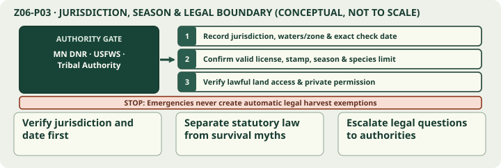

Z06-P03 · Hunting and fishing · New manuscript
No Automatic Emergency Legal Exemption for Wildlife Harvest
Clarify that wildlife, fishing, and firearm statutes remain legally binding and emergencies do not create blanket harvest exemptions.
When it applies · All hunting, fishing, and backcountry planning in Minnesota and neighboring jurisdictions.
Equipment · Current DNR regulation booklet, official digital/offline agency summary, check date.

Actions
- Verify current licensing, seasons, bag limits, and protected-species rules with the governing wildlife agency before any hunting or fishing trip.[H01, H02]
- Never assume an outdoor emergency or lost-person situation automatically grants a legal exemption to take wildlife, fish out of season, or bypass federal protections.[H01, H02, H14]
- Prioritize emergency shelter, water, and rescue communication during genuine emergencies rather than risking unlawful harvest and additional injury.[H02, T01]
Failure recognition · Relying on folklore claims of blanket survival exemptions results in severe state or federal wildlife violations and wasted rescue energy.[H01, H02, H14]
Verify · Every harvest plan documents governing jurisdiction, species, season, authority URL/handbook, and verification date.[H01, H02]
Stop or change course · Stop any harvest activity when season status, species legality, land ownership, or permit validity is uncertain.[H01, H02, H14]
Evidence and editorial notes
- H01 · Minnesota DNR · Minnesota Fishing Regulations (Current web edition)
- Section: Licensing, seasons, limits, and waterbody-specific rules · Conditions: Minnesota angling across inland, border, and designated waters
Support: Anglers must hold a valid license unless explicitly exempt and verify current season dates, possession limits, size slots, and special waterbody rules before fishing.
Limitations: Regulations change annually and differ on border waters, trout streams, and tribal/ceded territories; no emergency creates an automatic legal exemption. · Conflicting evidence: None noted.
Editorial note: Establishes Z06 fishing authority gate. · Specialist reviewer: Minnesota DNR fisheries and legal reviewer
Primary source · checked 2026-11-25 - H02 · Minnesota DNR · Minnesota Hunting and Trapping Regulations (Current web edition)
- Section: Hunting licenses, zones, seasons, and legal methods · Conditions: Minnesota big game, small game, and bird hunting
Support: Hunters must verify current license, permit-area, season, legal-hours, blaze-clothing, and method rules with the governing authority prior to afield activity.
Limitations: Private-land trespass law, municipal ordinances, and tribal jurisdiction apply separately; emergencies do not suspend wildlife law. · Conflicting evidence: None noted.
Editorial note: Establishes Z06 hunting authority gate. · Specialist reviewer: Minnesota DNR wildlife law reviewer
Primary source · checked 2026-11-25 - H14 · U.S. Fish & Wildlife Service · Migratory Bird Treaty Act Protections (Current web edition)
- Section: Migratory Bird Treaty Act federal protections · Conditions: All native migratory birds, nests, feathers, and eggs
Support: Federal law prohibits taking, possessing, or disturbing protected migratory birds, nests, or eggs outside regulated hunting seasons and federal permits.
Limitations: Waterfowl hunting requires both state licenses and a federal Duck Stamp plus non-toxic shot rules. · Conflicting evidence: None noted.
Editorial note: Enforces federal migratory bird law. · Specialist reviewer: USFWS and wildlife legal reviewer
Primary source · checked 2026-11-25 - T01 · American Red Cross · First Aid Steps (current web edition)
- Section: First Aid Steps > Check the scene; check the person · Conditions: Lay responder in United States; assess safety before contact
Support: Check scene safety, responsiveness, breathing and immediately life-threatening conditions.
Limitations: Lay guidance does not replace advanced clinical or rescue protocols. · Conflicting evidence: None; universal first-response opening gate.
Editorial note: Anchors scene-safety-first rule across Z01. · Specialist reviewer: EMS and wilderness medicine
Primary source · checked 2026-11-24
Source lineage · New manuscript (Z06 P17 legal boundary) · Classification · New manuscript.